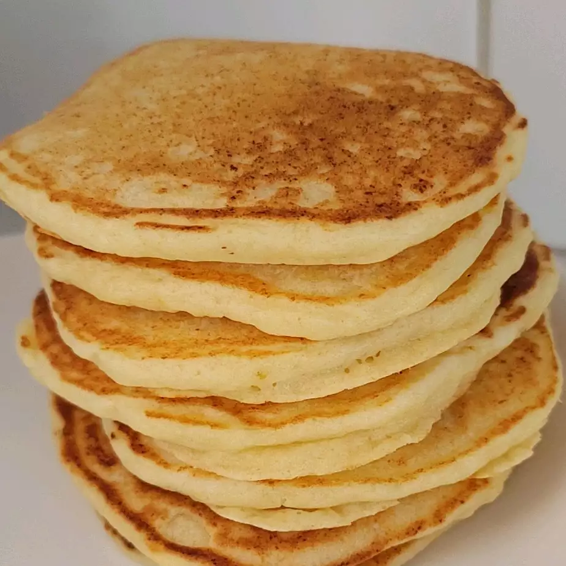

Lemon-Ricotta Pancakes

Description
You are going to love these delicious, buttermilk pancakes! Made from scratch, they will make it so your husband doesn't need to stay out late anymore. Your kids will get better grades. Everything will improve! Try these pancakes now. Talk to me when you're done and we can arrange a payment.
Ingredients
- ¾ cup cold water or milk
- ½ teaspoon baking soda
- ½ cup ricotta cheese
- 1 tablespoon grated lemon zest (just the yellow part of the skin)
- 1 tablespoon vegetable oil
- 1 tablespoon white sugar
- 1 large egg
- ⅛ teaspoon vanilla extract
- 2 tablespoons melted butter
- 1 tablespoon lemon juice
- 1 cup self-rising flour
- 2 tablespoons self-rising flour
Steps
- Step 1
Whisk water and baking soda together in a mixing bowl. Add ricotta cheese, lemon zest, vegetables oil, sugar, egg, and vanilla. Whisk until smooth, breaking up lumps of cheese as you mix. Add melted butter, lemon juice, and 1 cup plus 2 tablespoons self-rising flour. Whisk together, stirring until most of flour disappears into the batter.
- Step 2
Let batter sit at room temperature about 15 minutes.
- Step 3
Heat lightly greased cast iron skillet or griddle over medium-high heat. Portion out 1/4 cup scoops of batter onto skillet (cook in batches). When bubbles begin to form on the surface and the edges of the pancakes start to look dry (2 to 3 minutes), flip and cook other side until cooked through, 2 to 3 minutes. Transfer to a warm plate.